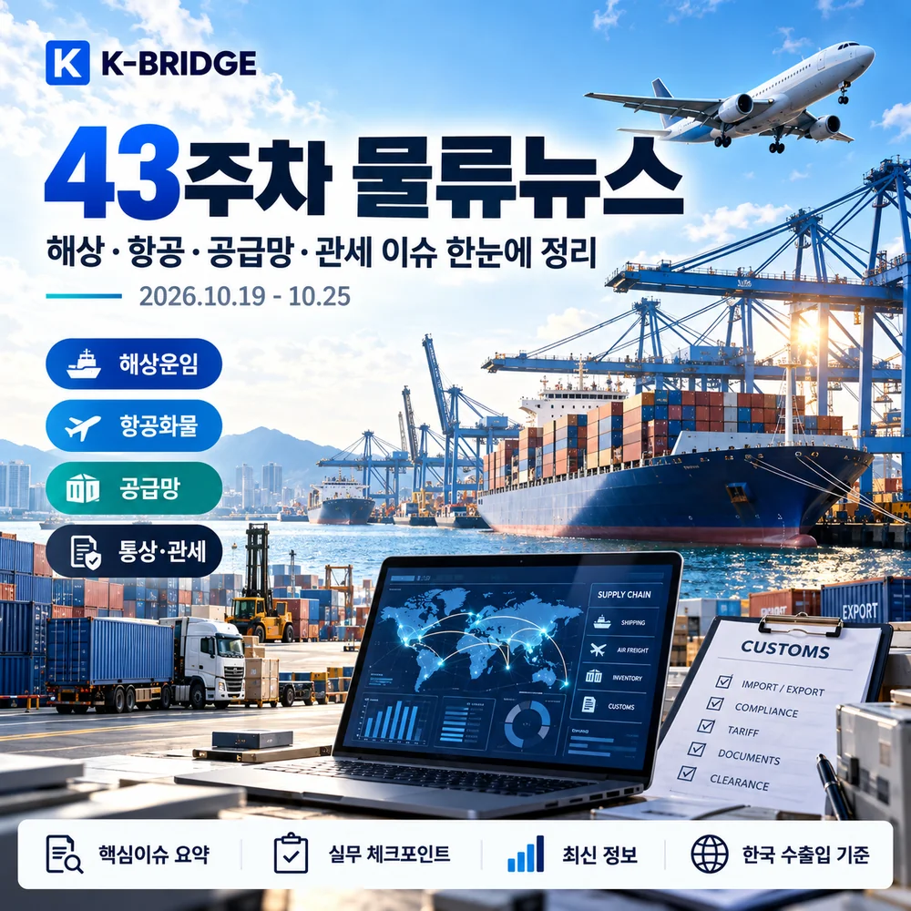
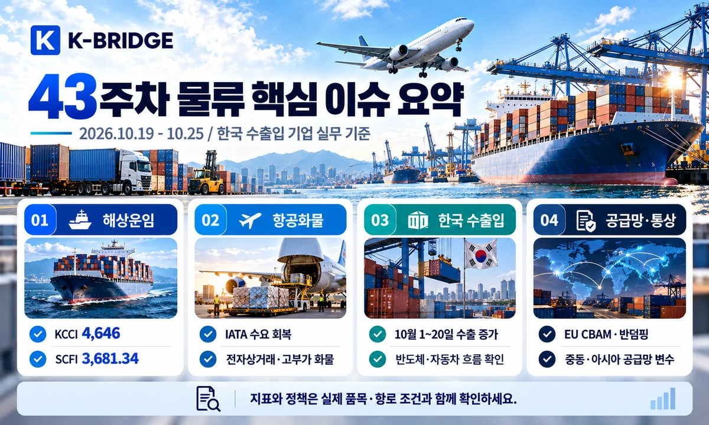
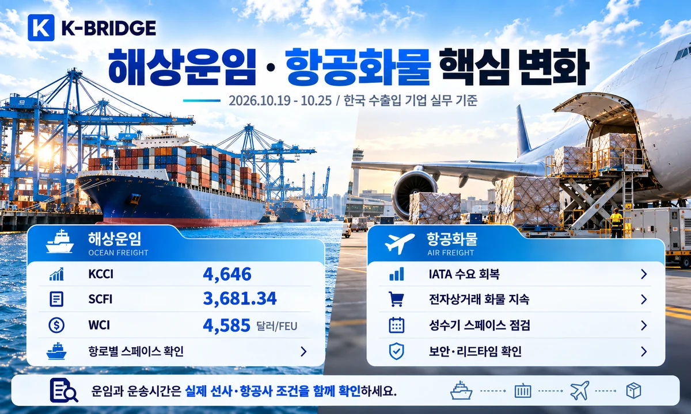
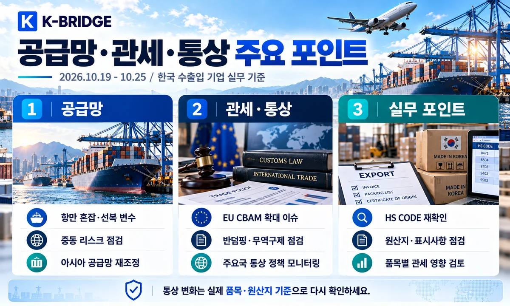
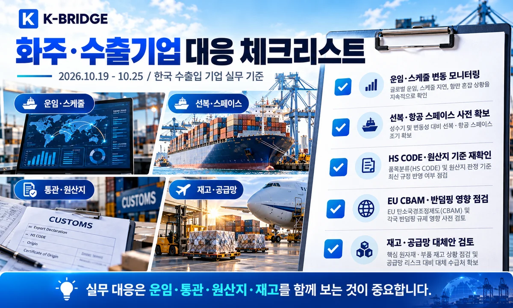

43주차, 한국 화주가 먼저 확인할 세 가지
첫째, 운임지수는 같은 방향으로 움직이지 않았습니다. KCCI는 4,646(-0.17%)으로 소폭 하락했지만 WCI는 40피트당 4,585달러(+2%)로 상승했습니다.
둘째, 10월 1~20일 수출은 616억달러(+105.4%)로 강했습니다. 그러나 조업일수 보정 일평균 증가율은 +65.9%이므로, 이 수치를 화물 물동량이 두 배가 된 것으로 읽지 않아야 합니다.
셋째, 규제 변화는 시행단계별로 구분해야 합니다. EU CBAM 하류재, 중국산 제품 반덤핑, 베트남 VAT 환급, EU 인증 협의를 실제 품목·원산지·거래증빙에 연결해 확인하세요.

1. 운임지수는 왜 엇갈렸고, 화주는 어떻게 판단해야 할까요?
종합지수 한 개로 운임을 판단하기 어렵습니다. 출발국·항로·운송계약 조건을 구분해야 하며, 한국 수출 증가와 글로벌 통상 규제가 실제 운송계획에 미치는 영향을 함께 확인해야 합니다.
| 지표 | 발표 기준·수치 | 변화 | 실무 해석 |
|---|---|---|---|
| KCCI / 한국발 | 10/19 · 4,646 | -0.17% | 유럽 +1.28%, 지중해 +2.82% |
| SCFI / 상하이발 | 10/23 · 3,681.34 | +0.05% | 중국발 현물운임 흐름 |
| CCFI / 중국 수출 | 10/23 · 1,876.27 | -2.4% | 한국항로 약 +4.4% |
| Drewry WCI | 10/22 · $4,585/40ft | +2% | 아시아-유럽·미주 일부 노선 상승 |
| 한국 수출 잠정 | 10/1~20 · 616억달러 | +105.4% | 조업일수 보정 +65.9% |
| IATA 항공화물 | 8월 실적 · CTK +4.4% | YoY | 발표일 9/29 / 10월 주간 통계 아님 |
지수는 발표 시점과 적용 항로가 서로 다릅니다. 같은 43주차라고 해서 동일한 화물·항구·선사 견적이 아닙니다.
2. 해상운임·선복: 한국발과 중국발을 나눠 봅니다
한국발 KCCI 4,646, 종합은 보합이지만 유럽·지중해는 상승
한국해양진흥공사 10월 19일 KCCI는 4,646으로 전주 4,654보다 0.17% 내렸습니다. 미주 서안은 -0.35%, 동안은 -0.16%였지만 유럽은 +1.28%, 지중해는 +2.82%였습니다.
실무 포인트: 유럽향은 FAK·PSS·실제 선사 견적을 다시 확인하고, 중남미 동안처럼 조정폭이 큰 항로는 한 번 더 비교하는 편이 좋습니다.
상하이발 SCFI 3,681.34, 10월 23일 소폭 상승
상하이해운거래소 발표 SCFI는 10월 16일 3,679.58에서 23일 3,681.34로 1.76포인트(+0.05%) 올랐습니다. 중국 출발 현물 운임 흐름을 보여주는 지표입니다.
실무 포인트: 한국 부산발 요금으로 직접 대입하지 말고 한국발 KCCI, 선사 유효 견적과 비교하세요.
CCFI 1,876.27 하락, 중국발 한국항로는 4.4% 상승
중국수출컨테이너운임지수(CCFI)는 10월 23일 1,876.27로 전주 대비 약 2.4% 하락했습니다. 반대로 중국발 한국항로는 800.86으로 약 4.4% 상승해 역내 노선 차별화가 나타났습니다.
실무 포인트: 중국발 한국 수입과 한국발 수출 운임은 방향이 다를 수 있으니 출발국을 반드시 구분하세요.
Drewry WCI $4,585/40ft, 아시아·유럽·미주 일부 항로 강세
Drewry 10월 22일 발표 WCI는 40피트 기준 4,585달러(+2%)였습니다. 상하이-LA 8,007달러(+2%), 상하이-로테르담 3,632달러(+3%), 상하이-제노바 4,152달러(+5%)였습니다.
실무 포인트: 지수는 계약 운임이 아니며, THC·연료할증·위험할증·도착지 비용을 포함한 All-in 조건으로 비교해야 합니다.
아시아-유럽 블랭크 세일링 8편 예정, 납기 버퍼 점검
Drewry는 10월 22일 기준 다음 주 아시아-유럽 주요 서비스에서 8편의 결항 예정이 공지됐다고 설명했습니다. 태평양 항로의 예정 결항은 2편으로 상대적으로 적었습니다.
실무 포인트: 결항이 확정된 선사·서비스코드와 실제 ETD, CY/CFS 마감을 확인해 대체 항차까지 확보하세요.
상하이 대기시간 97→38시간으로 감소, 항만 혼잡은 완화
Drewry에 따르면 상하이 선박 대기시간은 38주차 97시간에서 42주차 38시간으로 줄었습니다. 적체 개선에도 선복 조절로 운임이 다시 오를 수 있습니다.
실무 포인트: 기항항별 터미널 반입 가능시간과 부산 환적 연결편은 별개로 재점검해야 합니다.

3. 항공화물: 강한 수요와 위험물 규정
IATA 항공화물 +4.4%, 최신 공식 월간치는 8월 실적
IATA가 9월 29일 발표한 8월 글로벌 항공화물 수요(CTK)는 전년 대비 4.4% 늘고 공급(ACTK)은 0.1% 줄었습니다. 이는 이번 주 새로 집계한 운임이나 10월 물동량이 아닙니다.
실무 포인트: 수요 강세와 공급 제약을 고려해 반도체·전자부품·긴급부품은 운항일과 환적 연결 가능 여부를 미리 확인하세요.
항공 위험물 운송기술기준 전부개정 고시, 실제 규정 확인 필요
국토교통부는 10월 22일 항공위험물운송기술기준 전부개정 고시를 게시했습니다. 배터리·화학물질·전자제품 운송은 품목·포장·서류별 요건이 달라질 수 있습니다.
실무 포인트: 개정 내용을 화물별 SDS·UN번호·포장기준과 대조하고, 시행일과 항공사 수용규정을 확인한 뒤 부킹하세요.
4. 한국 수출입: 10월 중순의 강한 통관 실적
10월 1~20일 수출 616억달러, 잠정치 기준 +105.4%
관세청 10월 21일 발표: 1~20일 수출은 616억달러(+105.4%), 수입 471억달러(+42.8%), 무역흑자 145억달러입니다. 조업일수 보정 일평균 수출 증가율은 65.9%였습니다.
실무 포인트: 전년 대비 증가율에 휴일 수 차이가 반영돼 있으므로 물량이 두 배라는 뜻으로 해석하면 안 됩니다.
반도체 수출 275억달러, 수출 비중 약 44.7%
같은 기간 반도체 수출은 275억달러(+222.5%)로 10월 1~20일 기준 최고 기록입니다. 전체 수출의 44.7%를 차지했습니다.
실무 포인트: 반도체·정밀기기는 가격·중량·부피가 달라 수출액 증가만으로 항공 적재량 증가를 추정하지 말고 품목별 CTK·실출하 데이터를 보세요.
미국·중국·EU 수출 동반 증가, 목적지별 납기 대응
10월 1~20일 수출은 중국 +154.4%, 미국 +154.9%, EU +78.2%, 베트남 +74.6%로 증가했습니다. 다만 이는 통관 기준 금액 증가율입니다.
실무 포인트: 북미와 중국에 같은 항공·해상 조건을 적용하기보다 항구·공항·HS CODE·도착물류비를 분리해 견적받는 것이 안전합니다.
5. 관세·통상: 바뀌는 제도와 아직 확정되지 않은 조치
EU CBAM 하류재 적용 확대: 2028년 1월 대비 안내
산업통상부는 10월 23일 EU CBAM 하류재 대상 기업 설명회를 열었습니다. 발표에 따르면 2028년 1월부터 철강·알루미늄 하류제품으로 적용 범위가 확대될 예정입니다.
실무 포인트: EU 수출품 HS 코드와 투입소재, 배출량 정보 제공 책임을 바이어·제조사와 미리 확인하세요.
중국산 아연도금냉연·옵셋인쇄판 반덤핑 최종판정
무역위원회는 10월 23일 중국산 아연도금냉연과 옵셋인쇄판에 대한 덤핑조사 최종판정을 내렸습니다. 아연도금냉연 일부에 가격약속 및 덤핑방지관세 22.34~33.67% 부과를 건의했습니다.
실무 포인트: 무역위원회 판정은 곧바로 모든 통관건의 과세 확정이 아닙니다. 실제 부과 고시·대상기업·가격약속 조건을 확인해야 합니다.
한-EU FTA 상품무역위원회, 자동차 규정·인증 논의
10월 21일 열린 제14차 한-EU FTA 상품무역위원회에서 자동차 기술규정 동등성, 상호인정협정, 시장진출 애로가 논의됐습니다.
실무 포인트: 인증 부담 완화는 협의 단계이므로 기존 EU 인증·안전기준을 그대로 준수하세요.
EU 산업가속화법 IAA, 한국기업 차별 방지 요청
산업통상부는 10월 20~21일 유럽의회와 만나 IAA에 대한 한국 업계 입장을 전달하고 신뢰 파트너 인정·동등성 적용을 요구했습니다.
실무 포인트: EU 현지조달·역내생산 기준은 법안 심의 단계와 최종 발효 이후를 구분해 계약 문구에 반영해야 합니다.
베트남 내국수출입 VAT 환급지연 해결 진전
산업통상부는 10월 19일 베트남 현지 내국수출입 부가가치세 환급지연 문제 해결을 발표했습니다. 현지 세무당국 지침이 과거 거래도 환급 검토 대상으로 인정했습니다.
실무 포인트: 베트남 거래가 있는 기업은 현지 회계팀과 과거 미환급금·거래증빙·신청 가능 기간을 확인해 현금흐름 계획을 업데이트하세요.
외국 통상조치로 피해 기업 지원범위 확대 추진
10월 22일 산업통상부는 외국 통상조치로 인한 피해까지 지원대상을 늘리는 정책을 발표했습니다. 관세·수출제한 등 대외 규제로 납기가 흔들리는 기업은 지원요건을 살펴볼 필요가 있습니다.
실무 포인트: 지원대상, 신청 시점, 증빙 요구가 달라질 수 있으므로 발표와 실제 공고문을 구분해 확인하세요.
9개국 비관세장벽 대응 설명회, 인증서류 관리 중요
산업통상부는 10월 20일 수출기업 대상 9개국 비관세장벽 대응 설명회 개최를 발표했습니다. HS 분류뿐 아니라 국가별 제품 인증·표시·검사조건이 시장 진입을 좌우합니다.
실무 포인트: 샘플·상업송장·원산지증명서·시험성적서와 라벨 표시를 목적지별로 미리 점검하세요.

6. 중동·프로젝트·공급망 리스크
호르무즈·수에즈 리스크가 남아 있는 해상항로
Drewry 10월 22일 발표에서 42주차 걸프만 진입 컨테이너선은 2척으로 전주 5척에서 감소했습니다. 수에즈 운항은 41주차 54회에서 42주차 55회로 소폭 늘었습니다.
실무 포인트: 통항수 증가가 완전한 정상화를 의미하지 않습니다. 선사별 운항정책, War Risk, 대체항로, ETA 버퍼를 항차별로 확인하세요.
중동 프로젝트 화물: 장비 납기보다 통관·현장 반입 창 확인
산업통상부는 10월 20일 중동 플랜트 수주 확대를 위한 민관 협력방안을 논의했습니다. 프로젝트 현장은 부두 양하보다 장비 검수·내륙 특수차량·현장 반입일정이 전체 납기를 좌우할 수 있습니다.
실무 포인트: OOG·중량화물은 장비 도면, 포장·중심점, 현지 허가, 하역장비, 보험범위를 계약 전에 확인하세요.

7. 바로 적용하는 수출입 실무 대응
- 해상운임: 한국발 KCCI·중국발 SCFI/CCFI를 구분하고 실제 선사 All-in 견적·할증료와 비교
- 선복·스케줄: 아시아-유럽 결항과 환적항 체류시간 확인, 대체항차·CY 컷오프·ETA 버퍼 확보
- 항공: 반도체·긴급부품 스페이스 확보, 위험물 SDS·UN번호·포장·항공사 조건 확인
- EU CBAM: HS CODE별 적용 범위·배출량 데이터·바이어 서류 요청 확인
- 반덤핑: 중국산 철강·인쇄소재 대상 판정과 실제 과세 고시·공급자 조건 구분
- 베트남 VAT: 내국수출입 이전 거래 환급 가능성·증빙·현지 신청절차 확인
- 계약·재고: 수출액 증가를 실제 CBM·중량·리드타임으로 환산해 창고·반출 계획 수립
- 중동: 보험 인수 가능여부, War Risk, STS·우회항로, 내륙 반입·현장 일정 확인
8. 화주가 자주 묻는 질문
Q. 43주차 KCCI는 얼마인가요?
Q. SCFI와 WCI가 상승했는데 한국발 운임도 모두 오르나요?
Q. 2026년 10월 수출이 105% 증가했다면 화물 물량도 두 배인가요?
Q. CBAM 하류재 확대와 중국산 반덤핑관세는 바로 적용되나요?
KEY TAKEAWAYS / 핵심 실무 포인트
KCCI는 하락했지만 WCI는 상승했습니다. 10월 수출 증가율과 실제 물량은 별개입니다. CBAM·반덤핑·베트남 VAT는 품목별 적용 조건을 확인해야 합니다.
NEXT STEP
관련 글 · 물류도구
수출입 일정이 바뀌기 전에 운임과 통관 조건을 함께 확인하세요
KBRIDGE는 해상·항공·통관·국내운송을 함께 검토해 선복 변동, EU 통상 규제, 원산지·관세, 국내 도착일정까지 연결해 안내합니다.
2026년 10월 25일 오전까지 확인 가능한 공식 발표·보도를 바탕으로 10월 26일 게시용으로 구성했습니다. 통계는 각 발표일 기준이며 선적·통관 전 현행 선사 공지와 최신 품목별 규정을 확인하시기 바랍니다.